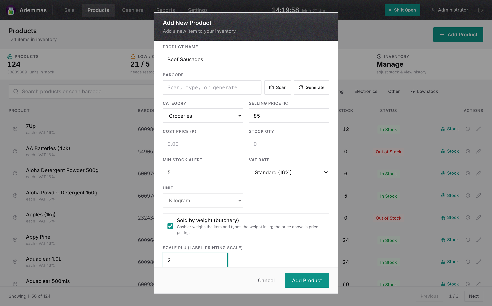

Some things in the shop are sold by the kilogram — meat, fish, chicken, liver. These are called weighed products. Before the till can ring one up, two people / two places must be set up to match:
⚖️
1. On the scale
Each product gets a number — a PLU. The scale knows its name & price per kg.
→
💻
2. In the POS
You add the product and type that same PLU number in the “Scale PLU” box.
→
🧾
3. At the till
The clerk scans the printed sticker — the item rings up at the right price.
The one rule that matters
The PLU number and the price per kg must be exactly the same on the scale and in the POS. If the scale says PLU 2 = Beef Sausages at K85/kg, then in the POS, Beef Sausages must have Scale PLU 2 and Selling Price 85. This sheet is about step 2 — keying them into the POS.
●A worked example
Say the butcher programs the scale like this: PLU 2 = Beef Sausages, K85.00 per kg. You then add the same product in the POS, set its price to 85 per kg, tick “Sold by weight,” and put 2 in Scale PLU.
Now when a customer buys some, the butcher weighs 0.620 kg and the scale prints a barcode sticker. The clerk scans it and the till shows:
Beef Sausages (0.620 kg) = K 52.70
0.620 kg × K85.00 = K52.70. The clerk types nothing — scanning the sticker does it all. This works even if the internet is down.
You only do this setup once per product. After that, it just works at every till.
●How to key a weighed product into the POS
Do this on a laptop or phone using the admin website — it’s easier to type on, and it sends the product to all three tills automatically within about half a minute.
Open the admin site and sign in, then tap Products.
Tap “+ Add Product” (top right). To fix an existing one, tap the pencil next to it instead.
Fill in the Product Name, choose the Category, and set the Selling Price to the price per kilogram (the same price that is on the scale).
Tick the box “Sold by weight (butchery)”. A new box called “Scale PLU” appears underneath.
In Scale PLU, type the same number the product has on the scale (for example 2).
Tap “Add Product” (or “Update Product”) to save. Done.

What it looks like. Selling Price is the price per kg, “Sold by weight (butchery)” is ticked, and Scale PLU holds the product’s number from the scale.
●What each box means
Product Name What the customer sees on the screen and receipt (e.g. Beef Sausages).
Selling Price The price for one kilogram. Must match the scale.
Sold by weight Tick this for anything weighed. It turns the unit into kg.
Scale PLU The product’s number on the scale. Must match the scale.
●Your weighed-products worksheet
Write down every weighed product here as you set it up. Fill the PLU and price per kg, then tick the box once it’s done on the scale and once it’s done in the POS. The first two rows are filled in as examples.
PLU #
Product name
Price / kg (K)
On scale
In POS
1
T-Bone Steak
289.99
✓
✓
2
Beef Sausages
85.00
✓
✓
☐
☐
☐
☐
☐
☐
☐
☐
☐
☐
☐
☐
●Check it worked & common mistakes
Test each product once
Print a sticker from the scale and scan it at a till. It should show the right name, weight and price. If the till says “Scale item PLU X isn’t linked to a product yet,” the number doesn’t match — check the PLU on the scale and in the POS are the same.
Watch out for these
• Different PLU on the scale vs the POS — they must be identical.
• Different price per kg — the sticker charges the scale’s price, so make them match.
• Forgot to tick “Sold by weight” — then the Scale PLU box never appears.
• Typing the price as grams or a total — it must be the price for one kilogram.
Keep this sheet near the scale. When you add a new weighed product, do the scale and the POS at the same time so the numbers always match.